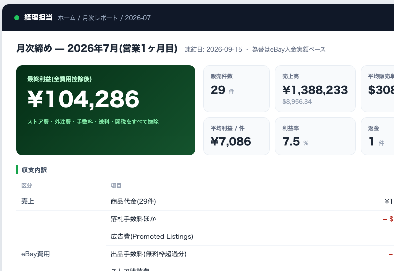
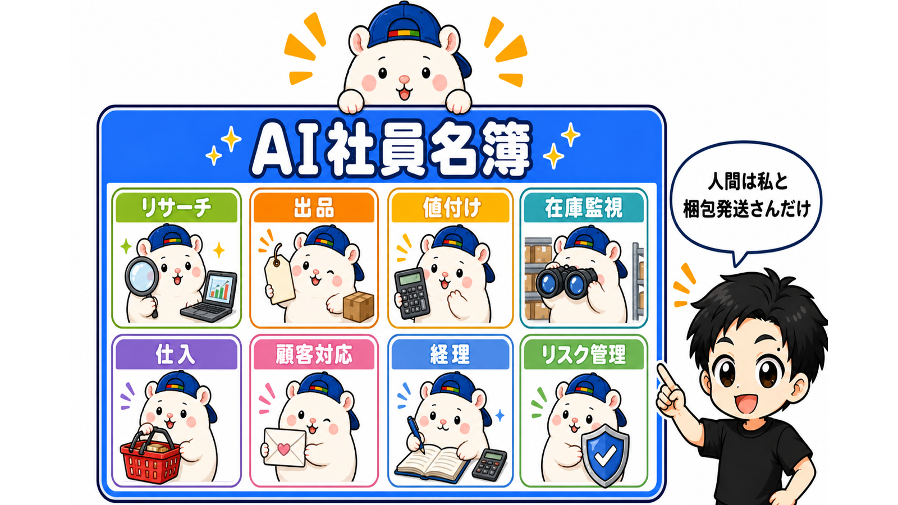
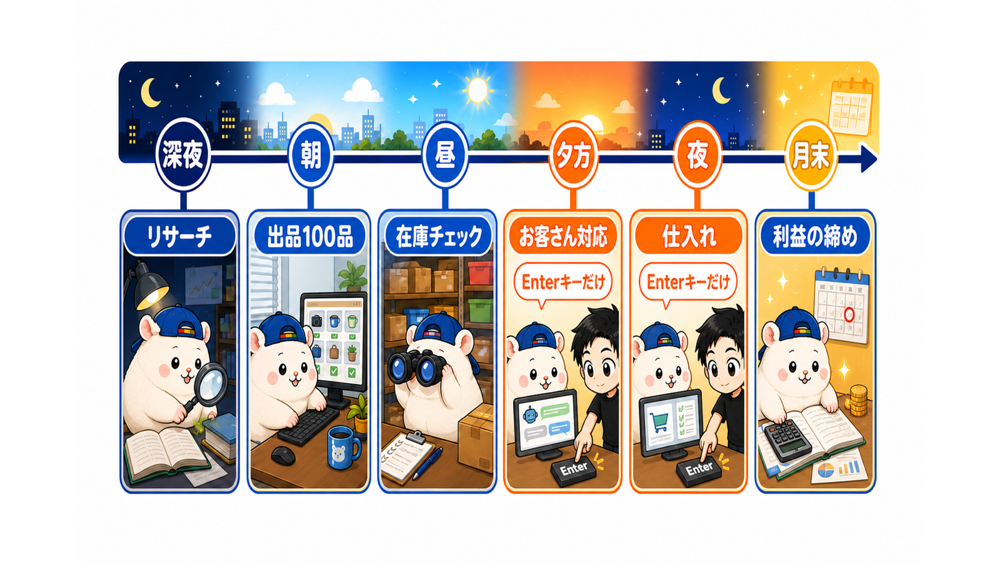
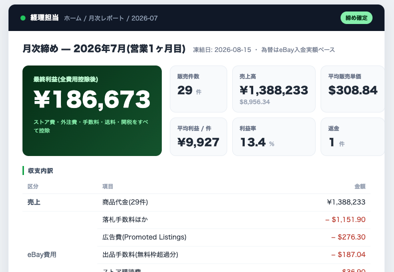

こんにちは、きくりんと申します。
まず、実物からお見せします。
私のeBayストアの、1ヶ月目の月次締めです。

初月の最終利益は、18万6,673円でした。
ストアのサブスク費用、梱包発送の外注さんの費用、eBay手数料、送料、関税。 ぜんぶ引いたあとの、手残りの数字です。
売れた個数は29個。1個あたりの利益は約9,900円。
そして、この店には従業員がほぼいません。
リサーチも、出品も、値付けも、在庫管理も、お客さんへの英語の返信も、収支の集計も、ぜんぶAIがやっています。
人間がやっているのは、梱包発送だけ。 私の仕事は、AIの提案に「OK」と返すことだけです。
作り話ではありません。 この教科書は、その店を作った全手順の記録です。
その前に、ひとつ質問です
あなたは、AIに毎月いくら課金していますか。
ChatGPT、Claude、Gemini——月3,000円。人によっては1万円以上。 そして、使いこなしてもいるはずです。要約させて、文章を書かせて、調べ物をさせて、「AIすごい」を毎日体感している。
では、そのAIで、いくら稼ぎましたか。
ここで数字が出てこない人が、ほとんどだと思います。 AIを使えること自体は、もう差になりません。使い方の解説も、プロンプト集も、あふれています。 足りないのは使い方の知識ではなく、AIを接続する「現金化のルート」です。
本書がやったことは、シンプルです。
副業の定番として何十年も回り続けている「eBay輸出」に、AIを接続した。
それだけです。新しい稼ぎ方を発明したのではありません。 枯れた定番のビジネスから、人間の作業をほぼ全部抜いた。その結果が、冒頭の18万6,673円です。
ノウハウは無料で全部ある。では、なぜ稼げないのか
こう思った人もいるはずです。 「eBay輸出なんて、やり方はYouTubeに無料でいくらでも転がっているじゃないか」。
そのとおりです。 「eBay リサーチ」で検索すれば、1時間半の完全攻略も、30分の画面実演も、無料で観られます。ノウハウは、とっくに出切っています。
それでも稼げる人が少ないのは、情報の差ではなく、実行の差だからです。
リサーチを毎日続ける。1品ずつ利益計算する。出品を積み上げる。在庫を監視する。英語で返信する。 「知っている」と「店として回り続ける」の間には、深い谷があります。 旧来はこの谷を、根性か、外注さんの人件費で埋めていました。今回の私は、AI社員で埋めました。 (前回の私が人件費で埋めようとして、どうなったかは、すぐ次でお話しします)
ついでに、本書の手の内をひとつ、先にお見せします。 無料で出切っているそのノウハウは、こうやってあなたのAI社員の研修資料に変わります。
この動画のノウハウを、うちの店に取り込みたい: (動画URL) 字幕を取得してテキスト化し、手順と判断基準を箇条書きで抽出して。そのうえで、私の店向けの運用チェックリストに変換して。
Claude Codeにこう頼めば、道具の準備から抽出まで、AIが自分で全部やります。 実測で、58分のリサーチ解説動画が、1分ほどで約1万9千字のテキストになりました。 世界中の無料ノウハウが、ぜんぶあなたの店の教材になるということです。
だから本書は、情報を売りません。 売るのは、AIに店を回させる「実行の仕組み」の作り方と、その実録です。
先に、カッコ悪い話をします
「AIでうまくいった自慢話か」と思われたくないので、先に失敗の話をします。
実は私、eBayは2回目です。
前回は外注さんを21名雇って、月の利益は最大200万円弱までいきました。
そして、赤字になってやめました。
大きくて重い家電を扱っていたので、輸送中に壊れる。 高額品だからお客さんは全額返金を求める。 送料は1個3万〜5万円。 返品と返金が重なった月は、赤字でした。
外注費は毎月30万円台。 儲かっていたはずの店は、気づけば「クレーム対応に疲れて赤字におびえる店」になっていました。
最後は外注さん全員に頭を下げて、撤退しました。
この教科書が他の教材と違うところがあるとすれば、ここです。
私は「eBayで稼げる」も「eBayで沈む」も、両方経験しています。
だから今回の店は、前回沈んだ穴をぜんぶ仕組みで塞いでから作りました。 その仕組みを担当しているのが、AI社員たちです。
なぜ「AI社員」なのか
今回の再挑戦にあたって、私が決めたことは1つだけです。
人間がやる仕事を「梱包発送」だけにする。
前回の失敗を振り返ると、赤字の原因は商品選びと梱包で、消耗の原因は「人に頼む・確認する・気をつかう」の積み重ねでした。
そこで今回は、eBay輸出の仕事を分解して、梱包発送以外の全部をAIに渡しました。
うちの店のAI社員名簿です。

- リサーチ担当: 売れる商品を24時間探し続ける
- 出品担当: 1日100品ペースで出品する(多い日は400品近く)
- 値付け担当: 手数料・送料・関税から逆算して値段を決める
- 在庫監視担当: 無在庫の生命線。仕入元の売り切れを検知して取り下げる
- 仕入担当: 売れてから買う
- 顧客対応担当: 英語の返信文を書く(送信ボタンは私)
- 経理担当: 1円単位で収支を締める
- リスク管理担当: 出してはいけないブランド・キャラ物をブロックする
ちなみにこの店には「チャム」という店長がいます。 白いハムスターです。
……ふざけているわけではなくて、X(@cham_ebay)でこの店の毎日を実況しているキャラクターです。 この教科書は、そのチャムの店の「中の人」による、種明かしの全記録だと思ってください。
eBayをやったことがある人へ
もしあなたがeBay輸出を少しでもかじったことがあるなら、この景色に覚えがあるはずです。
ビジネスポリシーとシッピングポリシーを、1個ずつ手で登録する。 リサーチは、参考セラーのSold履歴を1品1品目視で掘る。 仕入元に在庫があるか確かめて、サイズと重さをGoogleで調べて、各辺に10cm足して、0.5kg単位で繰り上げて、送料表とにらめっこして、利益計算表に手で入力する。
ツールで仕入元の画像を一括DLして、出品して、在庫管理ツールにSKUと仕入元URLを1品ずつ登録する。 バイヤーから質問が来たら、自分で調べて英語で返信する。 売れたら仕入れに走るけど、仕入元が売り切れていてテンパる。 いつも、どこかソワソワしている。
発送管理表のスプレッドシートに、荷受日と発送日を記入してもらう。 競合セラーが現れたら手動で価格調整。丸パクリしてくるセラーには、気づかない。 外注さんの報酬明細を作り、古物台帳を自分でつけ、トラブル対応に削られる。
私は前回、この運用を外注さん21名でやっていました。 マニュアルをスライドで何十枚も作り、教育して、チャットワークでやり取りして、それでも回りきらない。
この教科書に、いま挙げた作業はひとつも出てきません。
ぜんぶ、AI社員の仕事になったからです。 消えなかったのは、梱包発送だけです。
経験者のあなたほど、この教科書は効きます。 「あの作業が、これに置き換わるのか」が1対1で分かるように書いたからです。
この教科書で作れるもの
最初のセットアップから、日々の運営まで。 あなたが作るのは「AI社員で回るeBay輸出の店」です。
- eBayとPayoneerの開設・初期設定を、AIと一緒に終わらせる
- 売れる商品の探し方と、仕入元選定の考え方(無在庫)
- 1日100品を可能にする出品の仕組み
- 赤字を出さない値付けの式(手数料の実測値も公開します)
- 売り切れを見逃さない在庫監視
- 英語ができなくても回る顧客対応
- 唯一の人間仕事「梱包発送」の設計(外注さんの探し方・頼み方まで)
- 月次で利益を締める経理の型
- アカウントを守るリスク管理(私は一度、米国の連邦裁判所から訴えられて30万円払いました。その実話と防衛ルールも書きます)
道具はぜんぶ「Claude Code」というAIです。 プログラミングの知識は要りません。 私もコードは書けません。日本語でAIに頼んだだけです。
先にお伝えします: この教科書はClaude Codeを前提にします
大事なことなので、正直に書きます。
本書は「Claude CodeでeBay輸出の店を作る」教科書です。 Claude Code自体の基本操作(インストール・初期設定・頼み方の基本)は、本書では教えません。
Claude Codeが初めての人は、イケハヤさんの『Claude Codeの教科書』(¥980)を先に読んでください。 AI秘書を雇うところから丁寧に教えてくれる決定版で、私もここから始めました。
▼Claude Codeの教科書(¥980) https://brmk.io/1e0hae ※紹介リンクです(ここから買うと、私に紹介料が入ります)
そのぶん本書は、eBay輸出に1文字残らず全振りしています。 「AIの使い方の説明で半分埋まっている教材」にはしていません。
もうひとつ、大事な前提があります。 本書は「読んで覚える」教材ではなく、Claude Codeと話しながら進める教材です。 個別の商品をどうするか、あなたのジャンルで何を扱うか——本に書ける一般論の先は、教科書全文を読み込ませたあなたのAI(特典②)との相談で決めていきます。
必要な費用の話(先に全部言います)
この教材の他に、かかるお金があります。隠さず書きます。
- Claude Code: 月3,000円程度のプランから始められます。私は本気運用なので月110ドル(約1.6万円)のプランを使っています。どちらで何ができるかは本編で説明します
- eBayストア費: 出品数に応じたサブスク費用がかかります(私の実額と、始めたばかりの人がどのプランでいいかを本編で)
- 梱包発送の外注費: 自分でやればゼロ。外注する場合の相場と、私の報酬設計を本編で公開します
- 仕入れ資金: 無在庫なので「売れてから仕入れる」が基本ですが、売れたときの立替え資金は必要です（eBayから売上が入金されるまでのつなぎ）。出品枠が小さい始めたては数万円で足ります。回転が増えてきたら、50万円を目安に見てください
「教材を買えばゼロ円で儲かる」話ではありません。 そのかわり、初月の私の収支(18万6,673円)がどういう内訳だったかを、本編で全部見せます。
目次
序章 この店に人間は1人しかいない(ここまで無料)
第1部 開店準備 - 第1章 全体設計 — 無在庫輸出のお金の流れと、「旧来の全作業→AI社員」対応表(経験者はここから) - 第2章 セットアップ — アカウント・Payoneer・ビジネスポリシー・送料設定をAIと終わらせる
第2部 AI社員に店を回させる - 第3章 リサーチ担当 — 何を売るか。仕入元選定の考え方と売れ筋の見つけ方 - 第4章 出品担当 — 1日100品の出品パイプライン(タイトル・商品説明・カテゴリ) - 第5章 値付け担当 — 手数料実測値・送料・関税から逆算する値付けの式 - 第6章 在庫監視担当 — 無在庫の生命線。売り切れ検知と取り下げ - 第7章 仕入担当 — 売れてから買う手順と、古物台帳の自動記帳 - 第8章 顧客対応担当 — 英語CSの型。返品・クレームの実例と返し方
第3部 人間の仕事 - 第9章 梱包発送 — 唯一の人間仕事。前回の敗因を潰した「体積の枠」と外注設計 - 第10章 経理 — 月次の締め方。初月18万6,673円の全内訳
第4部 店を守り、伸ばす - 第11章 リスク管理 — 訴えられた話(30万円)から作った、アカウント防衛ルール - 第12章 AIコンサルタント — 数字が悪い月に、店を診断して立て直す - 第13章 2ヶ月目からの伸ばし方 — 出品数KPI・広告・月30万円への道
卒業章 あなたの店のAI社員名簿を作る
特典: 教材資料一式(7点)
特典は「読んで終わり」のPDFではなく、あなたのAIに渡して働かせる資料として作っています。 すべて本編の章と対応していて、READ_ME(対応表)つきでお渡しします。
特典① eBayセットアップ伴走スキル「ebay-setup-navi」(第2章で使う)
セットアップを、AIが対話しながら代行してくれるスキル(AIへの取扱説明書)です。 ストアプランの損益分岐、ビジネスポリシー、発送除外国、商品説明テンプレまで、あなたの希望を聞きながらAIが実際に設定します。 私が自分の店の開店で実際に使っている手順を、そのまま製品化しました。
特典② 教科書まるごとAI読み込み用ファイル+専用コーチ化プロンプト+発注文早見表(全章)
この教科書の全文を、あなたのAIに読み込ませるためのファイルです。 付属のプロンプトを貼れば、あなたのAIが「この教科書の内容だけを根拠に伴走するeBay開業コーチ」になります。 極論、あなたはこの教科書を読まなくてもいい、ということです。 さらに、本書の全章に出てくる「AIへの発注文」だけを1枚に抜き出した早見表つき。買ったその日から、コピペで店が動き始めます。
特典③ 収支シミュレーター(Excel)(第5章・第10章で使う)
商品価格を入れると、手数料・送料・関税を引いた利益が出る計算表。値付け担当の頭の中です。
特典④ 梱包発送アプリの作り方キット(第9章で使う)
うちの梱包発送の外注さんが毎日使っているWebアプリ(受注をスマホに即通知・仕入元リンク付き→梱包写真→送料の予実チェック→税関書類の自動化→報酬集計)を、あなたのAIに作らせるための発注書キットです。 要件定義書+段階別のコピペ発注文+検収チェックリストの3点構成。 アプリを「買う」のではなく「AIに作らせる」——本書の思想を、そのまま体験できる特典です。
特典⑤ 顧客対応アプリの作り方キット(第8章で使う)
海外のお客さんからのメッセージを一覧して、AIの英語返信下書きを確認して送るだけ、にする運営センターの発注書キットです。 構成は特典④と同じ(要件定義書+発注文+検収チェックリスト)。
特典⑥ HSコード&税関商品名ツール(第9章で使う)
発送時の2大面倒——HSコード探しと税関申告用の商品名づくり——を一発で済ませる小さなツールです。 日本語の商品名からHSコード候補を引き、eBayタイトルを税関用の簡潔な英語名に変換します。 ブラウザで開くだけのHTMLファイル1枚。インストール不要・月額なし。
特典⑦ AI店舗診断スキル(第12章で使う)
売上が止まった週に、店の数字を6ステップ(状況把握→どこが壊れた→なぜ→どうする→実行→答え合わせ)で診断するスキルです。 「店の診断をして」の一言で、あなたのAIが専属コンサルタントとして動きます。
※特典④⑤は、あえて「完成版アプリの配布」にしていません。誰かの完成品を借りるのではなく、あなたのストアに合わせたオーダーメイドのアプリを、AIで最短距離で作る——それ自体が、本書で身につけてほしい力だからです。作り方キットは、そのための最短ルートとして設計しています(本書は買い切りで、改訂版は開き直すだけで読めます)。
この教材が向かない人
以下に当てはまる人は、買わないでください。
- スマホだけで完結させたい人(Claude CodeはPCの道具です)
- Claude Codeの基本から教わりたい人(基本操作は本書では扱いません。先にイケハヤさんの『Claude Codeの教科書』をどうぞ)
- 今月の生活費を稼ぎたい人(無在庫は初速に個人差があります。私の初月18万は「仕組みを全部作った上での」数字です)
- 在庫を抱える転売で勝負したい人(本書は無在庫が軸です)
- 規約のグレーを攻めたい人(本書はアカウントを守る側に全振りしています)
- すでにeBayで月30万円以上稼いでいる人(知っていることが多いはずです)
よくある質問
Q. 英語ができません A. 私もです。お客さんとのやり取りは顧客対応担当(AI)が下書きし、私は送信ボタンを押すだけです。
Q. AIを使ったことがありません A. その場合は、先にイケハヤさんの『Claude Codeの教科書』(¥980)でAI秘書の雇い方を覚えてから来てください。本書はその「次の一冊」として設計しています。Claude Codeが動いている人なら、第2章のセットアップは特典①のスキルが伴走します。
Q. 資金はいくら必要ですか A. 教材代のほかに、AIの利用料(月3,000円程度〜)とストア費、売れたときの立替え(始めたては数万円・回転が増えたら50万円目安)です。詳細は第2章(開店の費用)と第10章(月次の締め)で全部出します。
Q. 副業の時間がとれるか不安です A. 私がこの店にかけている時間は、AIの提案に返事をする時間だけです。ただし最初のセットアップと仕組み作りには、まとまった時間(週末2〜3回分)を見てください。
Q. アカウント停止が怖いです A. 第11章がまるごとその話です。私は一度訴えられて30万円払っているので、防衛ルールは本気で書いています。
Q. すでにeBayをやっています。途中からでも使えますか A. むしろ経験者ほど効きます。既存のアカウントと出品はそのままで、いまの手作業をひとつずつAI社員に置き換えていく使い方ができます。第1章の対応表で「自分のどの作業から置き換えるか」を決められます。
Q. 月額の在庫管理ツールや外注さんは必要ですか A. 私は月額ツールをやめました。在庫管理も価格調整もAI社員がやるので、ツール代はAIの利用料に一本化されます。外注さんは梱包発送の1名だけです(自分で発送するならゼロ)。
Q. 内容は古くなりませんか A. eBayもAIも変化が速いので、確認日つきで書き、改訂を続けます。購入後はこの記事を開き直すだけで最新版が読めます。
序章 この店に人間は1人しかいない
本編に入る前に、この店の「ある1日」をお見せします。
これから作るものの完成形を、先に見てもらうのが早いからです。

深夜。 私が寝ている間に、リサーチ担当が仕入元の新着商品を見て回っています。 売れそうな商品を見つけると、サイズと重さを調べて、送料と手数料を引いても利益が出るかを計算します。
朝。 出品担当が、利益の出る商品だけをeBayに出品していきます。 タイトルも、英語の商品説明も、値付けも済んだ状態で。 この日は100品ほど出ました。
私はまだ何もしていません。
昼すぎ。 在庫監視担当から報告。 「仕入元で3品が売り切れました。出品を取り下げました」 無在庫販売の一番怖いところ(売り切れ品の売れ残り事故)が、静かに処理されています。
夕方。 アメリカのお客さんから質問が届きます。 「この製品は115Vで動きますか?」 顧客対応担当が英語の返信文を下書きします。 私はそれを読んで、送信ボタンを押します。
ここが、この日最初の「私の仕事」です。
夜。 商品がひとつ売れました。 仕入担当が仕入元の在庫を確認して、購入の準備を整えます。 私は内容を見て、OKを出します。 古物台帳には自動で記帳されます。
数日後。 商品が国内の拠点に届きます。 ここで登場するのが、この店で唯一の人間、梱包発送担当さんです。
検品して、専用アプリの指示どおりのサイズに梱包して、写真を撮ってアップして、発送します。 追跡番号はeBayに自動で反映され、お客さんに発送通知が飛びます。
月末。 経理担当が、売上から手数料・送料・関税・ストア費・外注さんの費用まで、ぜんぶ引いた手残りを締めます。

これが1ヶ月目の数字でした。
この1日の中で、私がやったことを数えてみてください。
返信の送信ボタンと、仕入のOK。ほぼこれだけです。
かつての私は、この1日の全部を、自分と外注さん21名でやっていました。 いまは、判断だけが私に残り、作業はAI社員に、現物だけが人間1人に渡っています。
ちなみに——eBay輸出を「人から教わる」と、いくらかかるか調べたことはありますか。
スクール型のコンサルだと、数十万円。高いものでは80万円を超える世界です。 私はそれを否定しません。伴走してくれる人がいる安心には、値段がつきます。
ただ、その中身の大半は「作業のやり方」です。 リサーチのやり方、出品のやり方、送料の計算、顧客対応の英文——本書で言えば、AI社員たちが毎日やっている仕事です。
作業を教わるのに大金を払う時代は、もう終わったと私は思っています。 やり方はこの教科書がぜんぶ書いてあり、実行はAIがやります。 浮いたお金は、教わるためではなく、仕入れ資金に回してください。
本編では、この店をゼロから作ります。
道のりは4部構成です。
- 第1部 開店準備: 仕組みの全体像を掴み、セットアップを終わらせる(第1〜2章)
- 第2部 AI社員に店を回させる: リサーチ・出品・値付け・在庫・仕入・顧客対応(第3〜8章)
- 第3部 人間の仕事: 梱包発送と、お金の締め(第9〜10章)
- 第4部 店を守り、伸ばす: リスク管理・店の診断・2ヶ月目からの伸ばし方(第11〜13章)
それでは、開店準備から始めましょう。